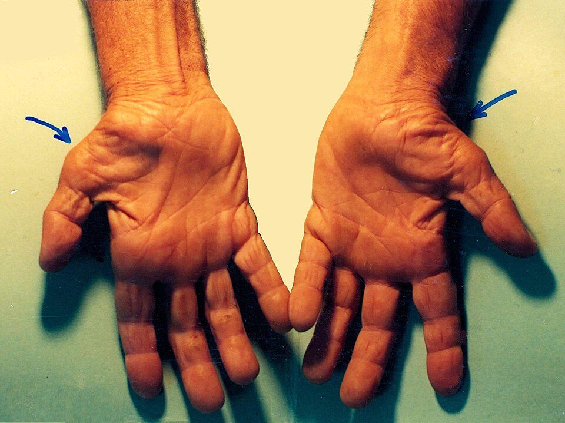

Información divulgativa. No sustituye la valoración de un profesional sanitario. Ante síntomas neurológicos bruscos (boca torcida, debilidad de un lado, dificultad para hablar) llama al 112.


Cuando no es preocupante
Notar la mano o el pie «dormidos» después de apoyarte mucho rato sobre ellos, cruzar las piernas o dormir sobre el brazo es normal: se comprime un nervio de forma pasajera y la sensación desaparece en minutos al moverte. También es normal un ligero hormigueo con el frío o con la ansiedad y la respiración acelerada.
Cuando conviene consultar
Si los hormigueos (los médicos los llaman parestesias) son frecuentes, persistentes, progresivos, o se acompañan de dolor, pérdida de fuerza o torpeza. La forma y el lugar del hormigueo orientan mucho hacia la causa:
| Dónde y cómo | Causa más probable |
|---|---|
| Pulgar, índice y corazón, sobre todo de noche, que mejora al sacudir la mano | Síndrome del túnel carpiano |
| Meñique y anular, al apoyar el codo | Compresión del nervio cubital en el codo |
| Ambos pies, en «calcetín», que va subiendo | Polineuropatía: diabetes, alcohol, déficit de vitamina B12 |
| Una franja que baja por el brazo o la pierna desde el cuello o la espalda | Radiculopatía (hernia discal, artrosis) |
| Cara externa del muslo, con quemazón | Meralgia parestésica (compresión de un nervio en la ingle, por ropa ajustada o sobrepeso) |
| Alrededor de la boca y en las dos manos, con respiración rápida | Ansiedad e hiperventilación |
| Medio cuerpo, que dura días o va y viene, en una persona joven | Valorar una esclerosis múltiple |
Señales de alarma
Llama al 112 si el hormigueo o el acorchamiento aparece de golpe en un lado del cuerpo (cara, brazo y pierna del mismo lado), sobre todo si se acompaña de debilidad, dificultad para hablar o pérdida de visión: puede ser un ictus.
Acude a urgencias si:
- Aparece una debilidad que avanza en horas o días desde las piernas hacia arriba: puede ser un síndrome de Guillain-Barré.
- Hay hormigueo en las dos piernas con problemas para orinar o acorchamiento en la zona genital: puede ser una compresión de la médula o de la cola de caballo.
Qué pruebas se hacen
- Una exploración de la sensibilidad, los reflejos y la fuerza.
- Análisis: glucosa, vitamina B12, tiroides, función renal.
- Electromiograma, que mide cómo conducen los nervios.
- Resonancia de la columna o del cerebro según la sospecha.
Qué puedes hacer
- Evitar las posturas que comprimen los nervios: no apoyar los codos durante mucho rato, no cruzar las piernas, usar férulas nocturnas si hay túnel carpiano.
- Controlar bien la diabetes.
- Limitar el alcohol.
- Revisar la vitamina B12 si eres vegano o tomas metformina u omeprazol durante años.
Fuentes
- Callaghan BC, et al. Distal symmetric polyneuropathy: a review. JAMA. 2015;314:2172-81.
- Padua L, et al. Carpal tunnel syndrome: clinical features, diagnosis, and management. Lancet Neurol. 2016;15:1273-84.
- MedlinePlus. Entumecimiento y hormigueo.